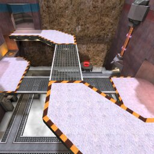

|  | The MOTW for Monday 9/18/00 was Crossed Paths (dboxctf2). |
MOTW QUICK LOOK
Like last week's map, there are three paths involved. But in this case they are arranged top to bottom, not left to right. It's not intuitively obvious which flagroom exit leads to which level, but that's what this overview is for, right?
- Exit the flagroom (Red/Blue Base) by the jumppad, and you'll be in a large L-shaped hallway (Upper Red/Blue Hallway) that leads to the top bridge (Upper Central) across the middle. Just past the corner of the L is an opportunity to drop down one level.
- If you exit the flagroom by the archway, you'll enter a smaller L-shaped hallway (Middle Red/Blue Hallway) that leads to the middle bridge (Middle Central). Before the corner of the L you can take a jumppad up, and past the corner you can drop down.
- If you exit the flagroom by the ramp or by the door nearby, the hallway beyond (Lower Red/Blue Hallway) takes you to the lowest, square-shaped bridge (Lower Central). Two teleporters on this bridge will send you up to get the central powerup and land on the top bridge.
Item breakdown: The middle powerup chooses randomly between regen and invis. There is a YA in each base, and also at the end of each Lower Hallway; there are shards at the corner of each Upper Hallway in a rounded alcove. RLs can be found at the beginning of each Lower Hallway (just after going up the ramp); LGs in the center, at each end of the middle bridge; and RGs at the end of each Upper Hallway. The map seems pretty straightforward, no tricks or oddities. Only weirdness to watch out for: there's a vertical chain-link fence at one spot in each Lower Hallway, and because of some Q3 goofiness, on some graphics cards that fence is only visible from one side.

 ) except where indicated otherwise
) except where indicated otherwise